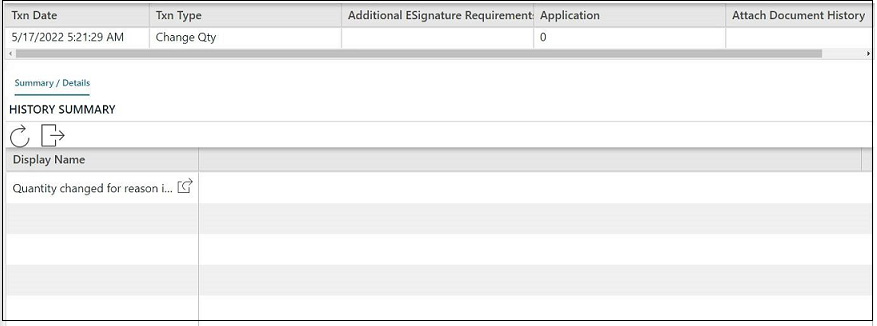

审核追踪配置页包含历史主线区段和事务详细信息区段。 通过“历史主线”区段，可以选择要在制造或资源审核追踪的“历史主线”表格中显示的字段。 通过“事务详细信息”区段，可以配置在制造或资源审核追踪的“历史主线”表格中选择事务时显示的其他信息。

该表定义“审核追踪配置”页中的字段。
请参考“建模页上的公共字段”获取有关所有建模对象的公共字段的信息。
|
字段 |
定义 |
类型 |
|
历史主线 |
||
|
|
可以选择要在制造或资源审核追踪的“历史主线”表格中显示的字段。 复选框可用于选择要添加或移除的字段。 |
必需 |
|
事务详细信息 |
||
|
|
对于在制造或资源审核追踪的“历史主线”表格中所选事务，树用于选择要配置的历史对象/事务，表格用于选择要在汇总/详细信息选项卡中显示的字段。 复选框可用于选择要添加或移除的字段。 |
可选 |
在制造审核追踪页中，在“历史主线”表格中选择事务时，应用程序通常会在“历史主线”表格下面显示“汇总/详细信息”选项卡。汇总/详细信息表格包含所选事务的历史信息。
要配置的历史对象或事务显示在树概览视图中。 可以展开对象列表，还可以配置在汇总/详细信息表格中显示子对象的历史信息。
此图显示在“历史主线”表格中选择的容器事务的“汇总/详细信息”选项卡的示例。

按以下步骤创建新的审核追踪配置实例：
| 1. | 打开审核追踪配置页。“建模”页中将显示“审核追踪配置”页。 |
| 2. | 单击新建。显示用于定义新实例的空白字段。 |
| 3. | 在审核追踪配置字段中输入审核追踪配置实例的名称。 |
| 4. | 根据您的业务需求输入可选信息。有关可选字段的信息，请参考字段定义表。 |
| 5. | 单击保存。新实例将显示在审核追踪配置实例列表中。 |
按以下步骤配置历史主线表格：
| 1. | 执行“如何定义审核追踪配置实例”程序。 或 从审核追踪配置列表中选择一个实例。 应用程序将显示所有可用字段和选定要显示在“历史主线”表格中的所有字段。默认情况下，应用程序包括 TxnDate 字段。 |
| 2. | 执行下述中的一项操作： |
| • | 选中可用字段复选框以添加所有可用字段。 应用程序将“可用字段”列表中的所有字段移到“所选字段”列表。 |
| • | 在可用字段列表中选择多个字段，然后单击添加按钮。 应用程序将这些字段移到“所选字段”列表。 |
| • | 在可用字段列表中选择所需字段，然后单击添加按钮。 应用程序将该字段移到“所选字段”列表。 |
| 3. | 选择要移动的任何字段，然后使用拖放箭头按钮更改字段顺序。 |
| 注释: | 应用程序根据“所选字段”列表中的字段顺序显示“历史主线”表格中的列。 |
| 4. | 要删除任何选定的字段，请使用移除按钮。 |
| 5. | 单击保存。应用程序将更新“历史主线”表格。 |
| 6. | 有关历史表格的信息，请参见“如何配置事务信息”。 |
按照以下步骤配置事务信息：
| 1. | 从审核追踪配置实例列表中选择一个实例。 |
| 2. | 展开事务详细信息区段。汇总和详细信息可显示的历史对象（事务）在树结构中组织管理。 选择一个事务后，应用程序将在“可用字段”列表中显示所有可用字段。 对于父对象 HistoryDetails，默认显示 DisplayName 字段。 |
| 3. | 在事务列表中选择要配置的历史对象。 |
| 4. | 执行下述中的一项操作： |
| • | 选中可用字段复选框以添加所有可用字段。 应用程序将“可用字段”列表中的所有字段移到“所选字段”列表。 |
| • | 在可用字段列表中选择多个字段，然后单击添加按钮。 应用程序将这些字段移到“所选字段”列表。 |
| • | 在可用字段列表中选择所需字段，然后单击添加按钮。 应用程序将该字段移到“所选字段”列表。 |
| 5. | 选择要移动的任何字段，然后使用拖、放箭头按钮更改字段顺序。 |
| 注释: | 应用程序根据“所选字段”列表中的字段顺序显示汇总/详细信息表格中的列。 |
| 6. | 要删除任何选定的字段，请使用移除按钮。 |
| 7. | 单击保存。应用程序将更新历史对象（事务）。 |
| 8. | 为要配置的每个事务重复步骤 3-6。 |